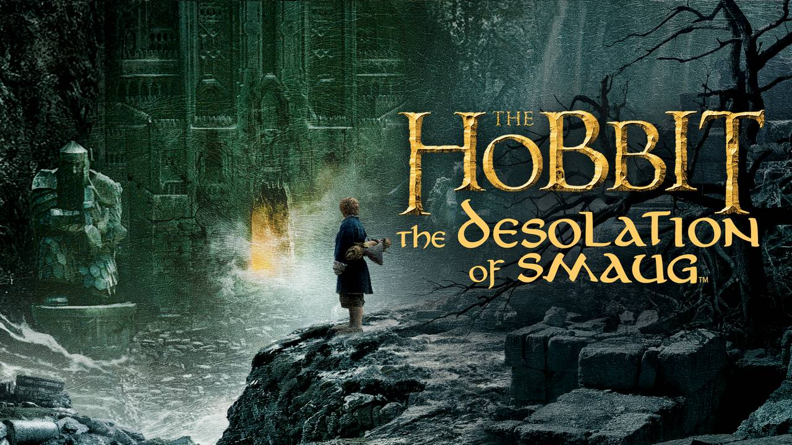
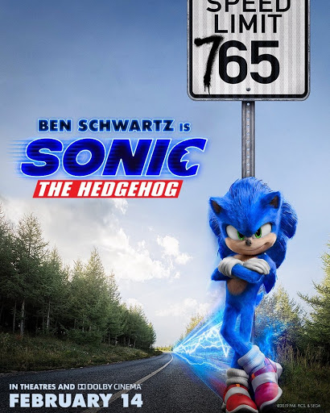
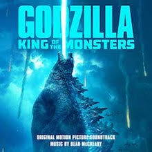
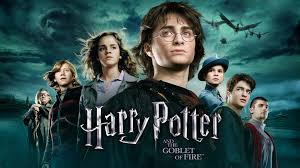
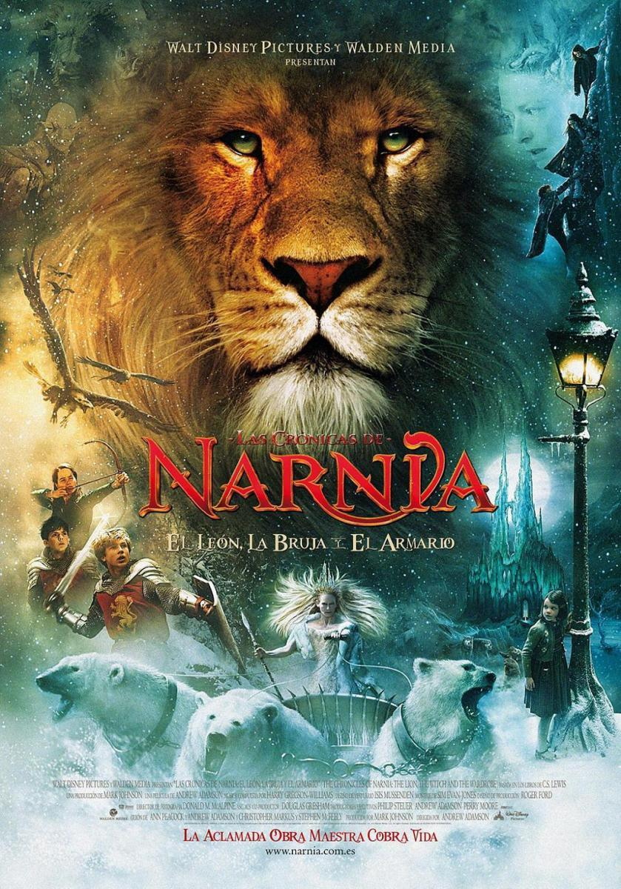

|  |
The Hobbit
This movie is so cool for because there are a lot of fighting and magic - the stuffs I really like.
My favorite is the Bilbo, the main character, mainly because of how the actor played.
|
 |
Lord Of The Rings
Lord of The Rings is like The Hobbit but this time it's about destroying the ring because the darkness
has been awaken and has been spreading. The Ring has a will of its own and it wants to go back to his former
master who is the king of the darkness. If that happens the world is at stake. That's why the main chracter
here and his companions must destroy the ring and to do that they must travel to the base of the enemy.
From there, there is a volcano and they must drop the ring there to be destoryed forever.
The main character here is the grand son of Bilbo and goes by the name Frodo.
|
|  |
Sonic The Hedgehog
This movie is about a hedgehog that can run like crazy, faster than the speed of sound.
He is from another dimension and someone is going after him so, he has to keep running.
But then, his ring which can be used as a portal teleported him to Earth. Too bad, on Earth people
are hunting him because they think that he is dangerous and there is another one, a guy who hunts him because he
wants his power.
|
|  |
Godzilla King Of Monsters
I really like this movie because it's really fun to watch. The editing its so good, the animation and sound effects are well-made.
It is a fantasy and an action movie.
|
|  |
Harry Potter
Magic is on top of my favorite list and I see magic and mystical creatures in Harry Potter. I like how Harry becomes strong
and fight Voldemort in the end.
|
|  |
The Chronicles of Narnia
Narnia is one of my favorite movies because there are a lot of fighting, magic and I get to see mystical creatures,
not to mention that the animals are talking like humans. Narnia is in a different dimension and time there runs
faster than the real world, so you can age there fast. My favorite character there is Aslan the lion.
|